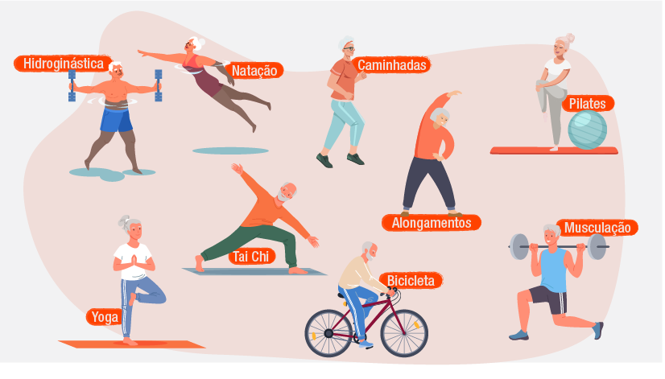

Como Melhorar Sua Saúde: Dicas e Hábitos Essenciais
A saúde é um dos pilares fundamentais para uma vida plena e feliz. Mas o que realmente significa ter boa saúde? Não se trata apenas de estar livre de doenças, mas também de cultivar bem-estar físico, mental e emocional. No site +Saúde, nosso objetivo é fornecer informações e orientações práticas para ajudar você a viver melhor todos os dias.Que é Ter Boa Saúde?
Ter boa saúde é o equilíbrio entre o corpo e a mente. Isso inclui:- Saúde física: um corpo forte e bem cuidado, com energia para enfrentar os desafios diários.
- Saúde mental: uma mente clara, resiliente e capaz de lidar com o estresse.
- Saúde emocional: um estado de harmonia, com a capacidade de expressar e gerenciar emoções de forma saudável.
- Saúde social: boas relações com outras pessoas, que promovem suporte emocional e felicidade.
- Saúde espiritual: um senso de propósito e conexão com algo maior, seja em uma religião ou em crenças pessoais.
Hábitos Saudáveis para o Dia a Dia
A seguir, listamos algumas dicas para melhorar sua saúde e adotar um estilo de vida mais equilibrado:- Mantenha uma Alimentação Balanceada
- Pratique Atividade Física Regularmente
- Cuide da Sua Saúde Mental
- Tenha uma Rotina de Sono Adequada
- Check-ups Regulares
- Evite Hábitos Prejudiciais
Inclua alimentos naturais, como frutas, verduras, legumes, grãos integrais e proteínas magras em sua dieta. Evite o excesso de alimentos ultraprocessados, ricos em açúcar, gordura saturada e sódio. Hidrate-se! Beber água é essencial para o bom funcionamento do corpo. Experimente fazer pequenas refeições ao longo do dia para manter os níveis de energia.

Escolha um tipo de exercício que você goste, como caminhada, corrida, dança ou ioga. Procure se movimentar pelo menos 30 minutos por dia. A atividade física melhora a circulação, fortalece os músculos e libera endorfinas, promovendo bem-estar. Inclua alongamentos para aumentar a flexibilidade e prevenir lesões.

Dedique tempo para atividades relaxantes, como leitura, meditação ou hobbies. Estabeleça conexões sociais saudáveis: converse com amigos e familiares. Não hesite em buscar ajuda profissional se sentir necessidade. Pratique a gratidão: anote diariamente três coisas pelas quais você é grato.
Dormir bem é essencial para recarregar as energias e fortalecer o sistema imunológico. Crie um ambiente propício para o sono: escuro, silencioso e com temperatura agradável. Evite eletrônicos antes de dormir para melhorar a qualidade do descanso. Estabeleça horários regulares para dormir e acordar, mesmo nos finais de semana.
Visite profissionais de saúde periodicamente para prevenção e monitoramento. Estar atento às necessidades do corpo evita problemas futuros. Realize exames de rotina, como medição da pressão arterial, níveis de colesterol e glicemia.
Reduza o consumo de álcool e evite o uso de tabaco. Gerencie o estresse com técnicas como respiração profunda ou meditação guiada. Esteja atento ao tempo gasto com telas e redes sociais, equilibrando com atividades offline.